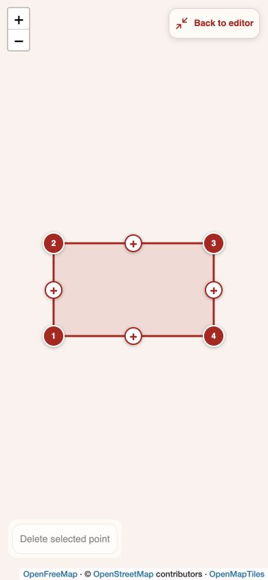
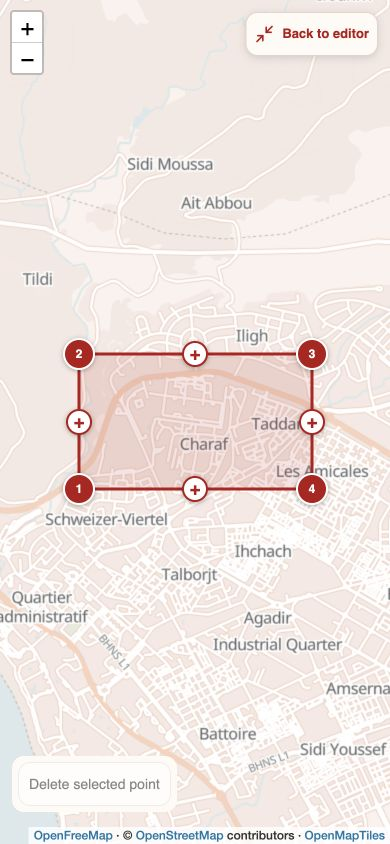
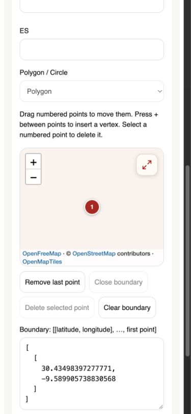
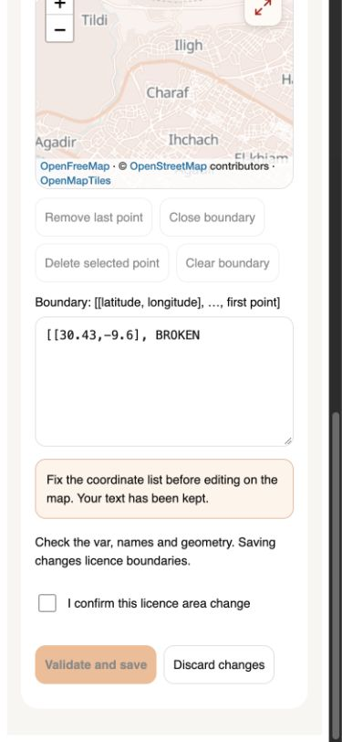
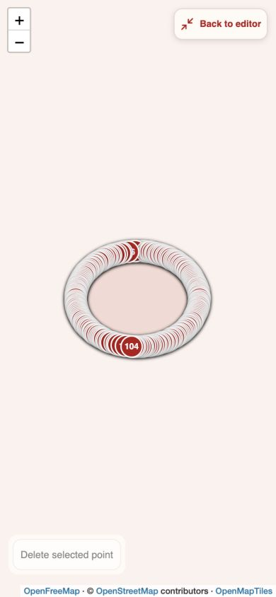
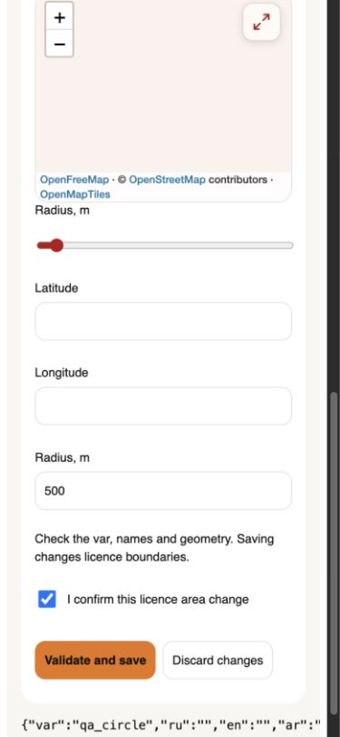
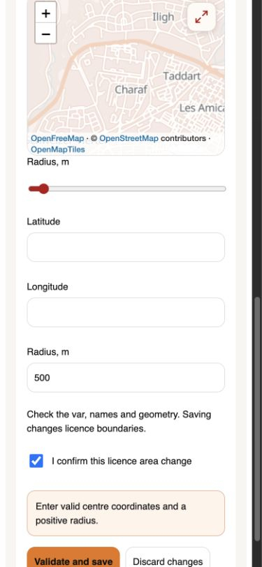
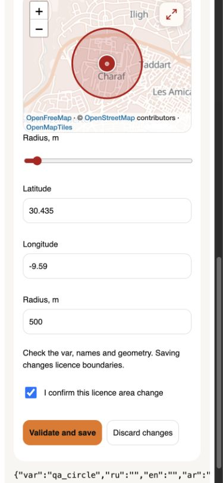

5 ноября 2026 · исправления r11. Проверен редактор зон, а не весь сервис такси. Исправлены три воспроизводимые ошибки. Фронтовые проверки проходят; серверная приёмка рабочих зон остаётся открытой.
Открыть демо без записи в БД · Версия сборки · Краткий результат
| Шаг | Сценарий | Результат |
|---|---|---|
| 1 | Загрузка нашей карты и полный экран | Исправлен HTTP-заголовок демо, блокировавший источник подложки. Проверяются реальные ответы источника и тайлов, а не только внутренний статус ready. |
| 2 | Полигон: точки, замыкание, сложный контур | Перетаскивание, вставка, удаление и возврат к форме работают. Проверен контур на 200 вершин. Самопересечения отклоняются. |
| 3 | Ошибочный список координат | Исправлена потеря текста после клика по карте. При ошибке JSON изменение карты блокируется, текст сохраняется и показывается сообщение. |
| 4 | Круг: центр, радиус, подтверждение | Пустые координаты из пробелов больше не превращаются в 0,0. Корректные координаты и радиус сохраняются в локальном демо. |
| 5 | Клавиатура, блокировка, отказ карт | Tab удерживает фокус в диалоге, Escape закрывает полный экран. В режиме просмотра геометрия заблокирована. Проверены резервная подложка при ошибке источника и Retry. |
1057 тестов в 192 наборах; TypeScript и проверка обработчиков заказа. Chromium: ширина 390 и 1280 пикселей. Дополнительно проверен встроенный браузер Codex. Сетевые записи в общую БД во время проверки не выполнялись.
В опубликованном демо правило для всех QA-страниц задавало connect-src 'none'. Стиль загружался, но источник карты блокировался. Для /qa/zones/ добавлено отдельное правило с точным разрешённым источником карт; остальные QA-страницы сохраняют прежние ограничения. Ошибка источника теперь включает резервную подложку даже после события load.


Раньше неразобранный JSON превращался для карты в пустой список точек. Следующий клик заменял весь текст новой точкой. Теперь невалидный ввод сохраняется, а редактирование карты приостанавливается до исправления списка.



Поля из пробелов раньше принимались за географический ноль. Числовой разбор теперь отличает отсутствующий ввод от настоящего значения 0 и отклоняет нечисловые значения.


